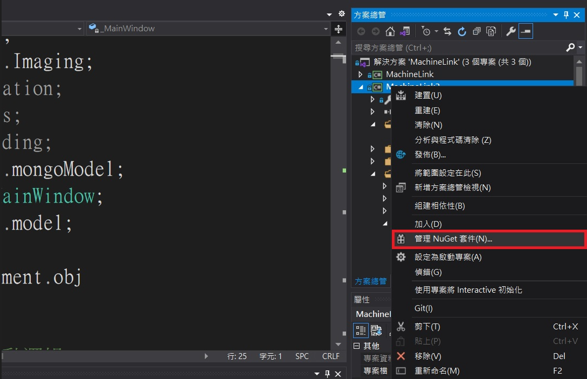
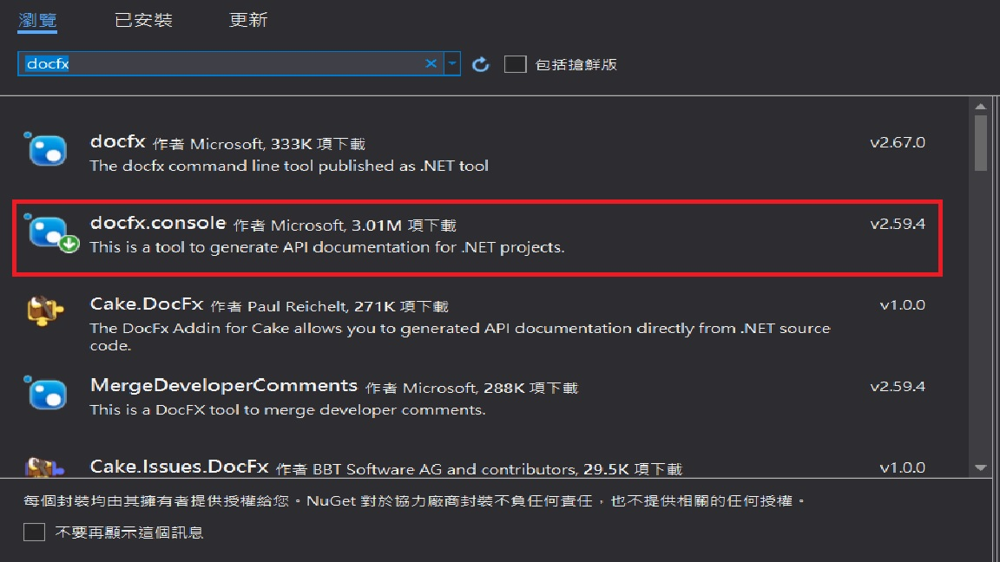
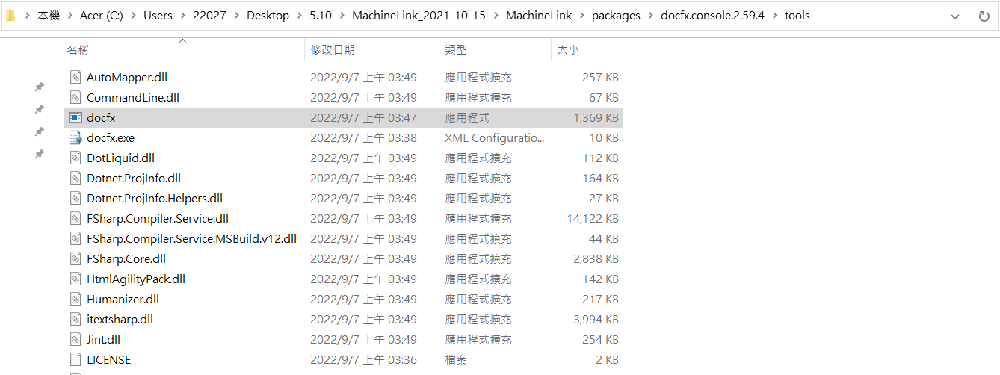
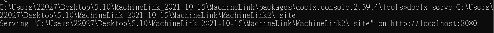
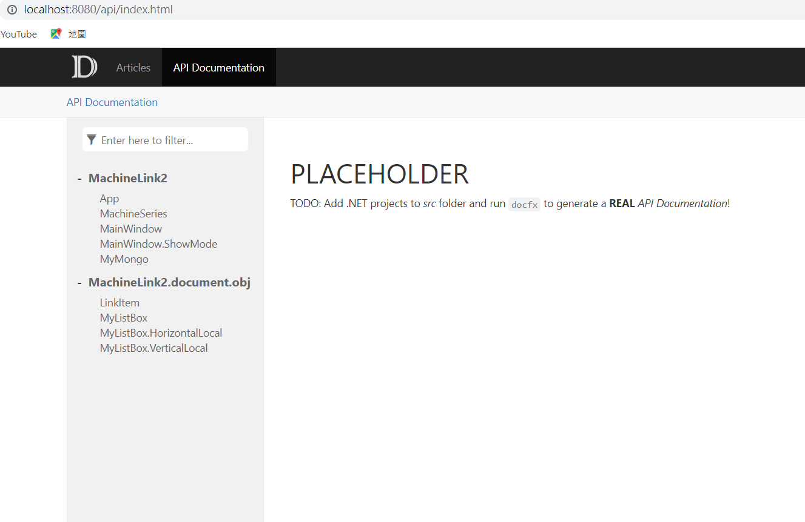
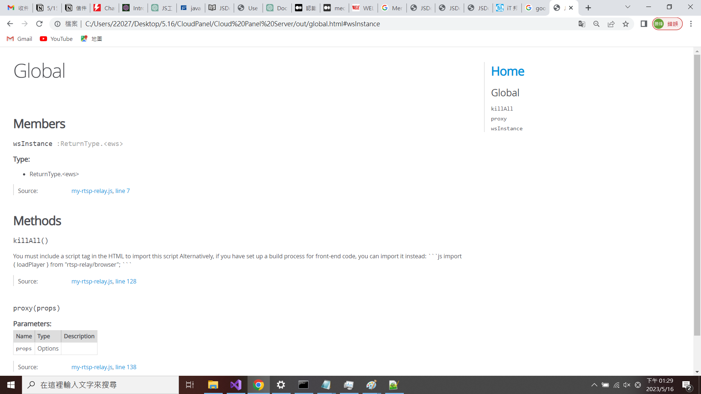
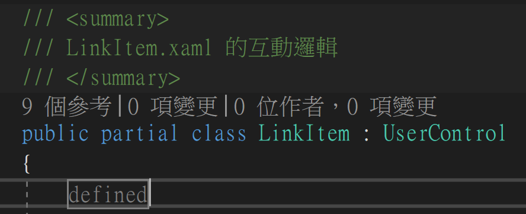

目前是一位軟體工程師
在Visual Stdio 2019安裝DOCFX
什麼是DOCFX
DOCFX是一款由微軟推出的開源工具，用於生成靜態文件站點，特別適用於編寫API文件和代碼文件。
DOCFX功能
使用DOCFX，可以通過編寫Markdown文件來描述您的代碼，然後將這些Markdown文件轉換成一個靜態網站，該網站包含您的API文件和代碼文件。
DOCFX支持多種文件格式，如Markdown、YAML和JSON等，同時也支持多種文檔站點格式，如HTML、PDF和EPUB等。
DOCFX還支持自定義模板和樣式，能夠輕鬆創建符合需求的文檔站點。
總的來說，DOCFX是一款功能強大且易於使用的文檔生成工具，可幫助開發人員和文檔編寫人員快速創建高質量的文檔站點。
用此工具，讓龐大的程式碼分別列，api文件和程式碼文件，
方便他人閱讀快速了解目前的程式碼的狀況。
安裝DOCFX
建置過程如下 由於安裝有很多種方式 ，這裡只舉例其中一種，
由於用的是vistual studio 2019 ，所以此方式是在vistul studio 2019 進行
1.開啟c# 連線程式專案

2.輸入docfx點擊docfx.console

3.安裝完後重建專案，可以發現方案總管理多了一個api文件
4.用cmd 輸入cd 到api的所在的位置 ，如圖所示

5.之後輸入docfx serve C:\Users\22027\Desktop\5.10\MachineLink_2021-10-15\MachineLink\MachineLink2\_site

6.網址輸入localhost:8080 ，顯示如下圖

顯示頁面如下

用了docfx後可以查看最近何時進行改動和這個函式的改動的地方以及又是誰進行了改動
